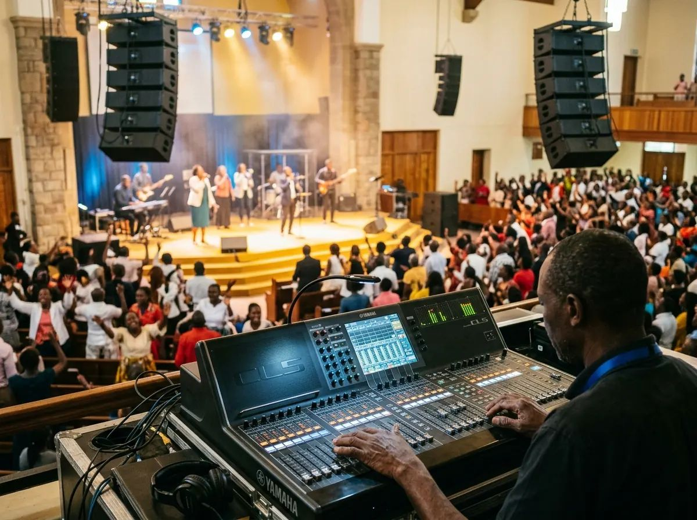
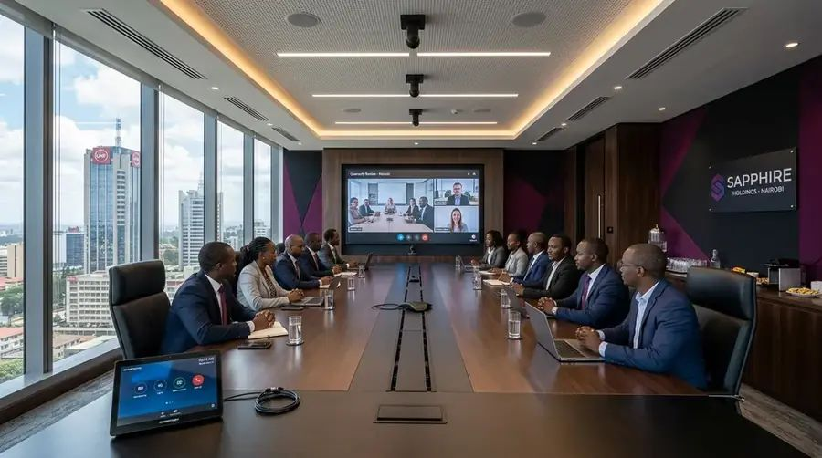
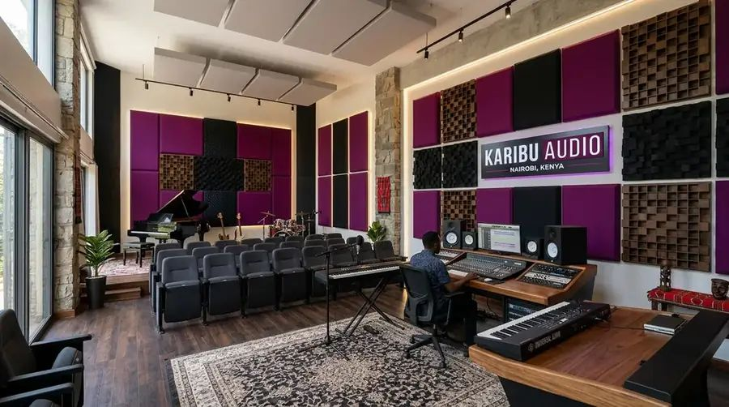
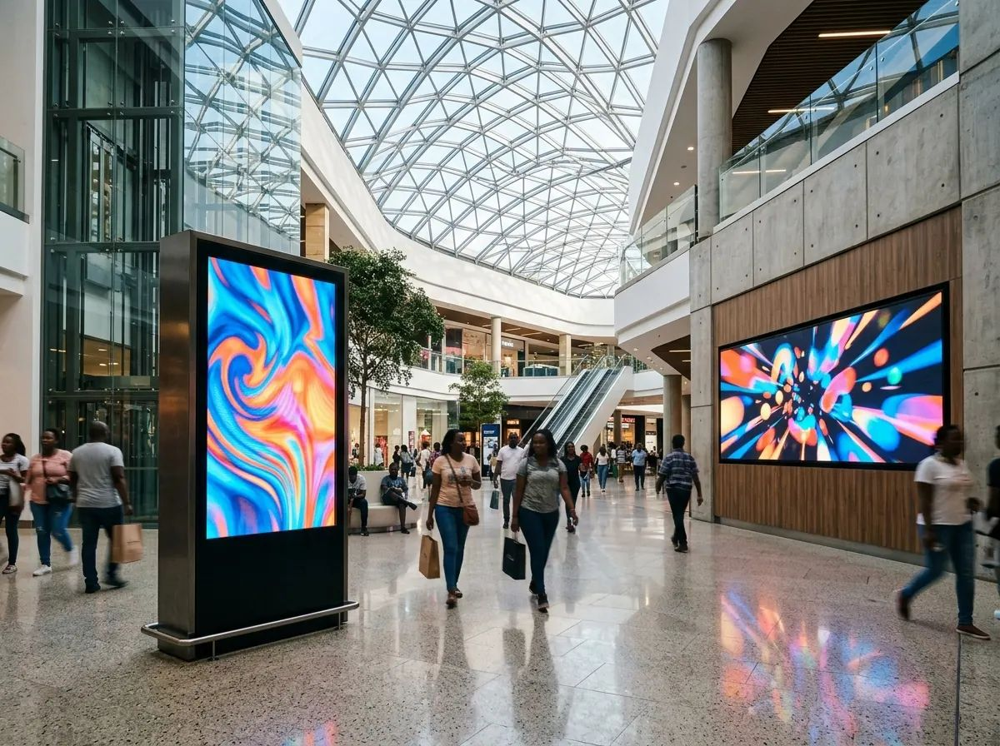
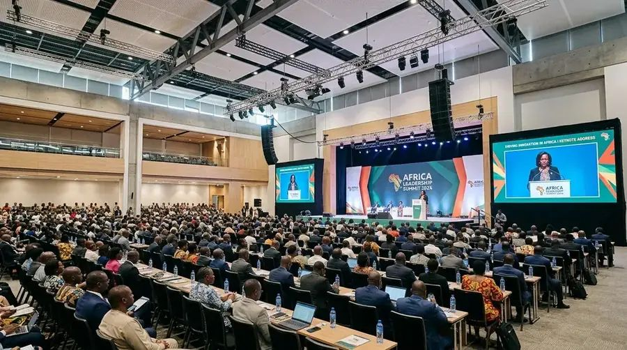
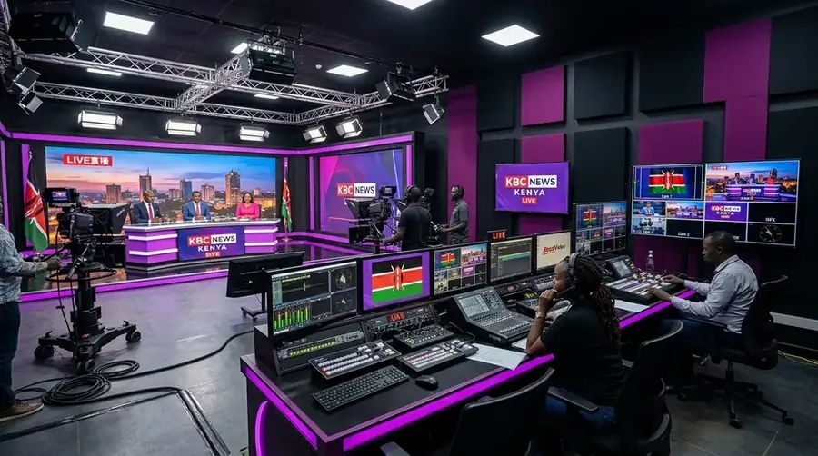

Company Profile 2026
Kenya's Professional Audio Visual Company
Sound, LED screens, stage lighting, conference and PA systems and acoustics, designed, installed and supported across Kenya and East Africa.
Sound, LED screens, stage lighting, conference and PA systems and acoustics, designed, installed and supported across Kenya and East Africa.
About VTECH
VTECH Audio Visual Solutions is a Nairobi audio visual integrator designing, installing and supporting sound, video and lighting for organisations across Kenya and East Africa. Engineered to international standards, delivered with local expertise.
Who we are
Founded and headquartered in Nairobi, VTECH is a full-service integrator serving churches, hotels, schools and universities, corporates, government, healthcare, media houses and event organisers.
Our engineers specify equipment from leading global manufacturers and install to recognised standards for acoustics, electrical safety and signal integrity, while designing for the realities of the region: power conditions, room types, budgets and timelines.

What we stand for
Systems designed to international standards, not shortcuts. We measure, specify and document every install.
Fixed written quotes within 24 hours of a free site survey. No hidden costs, no surprises.
A Kenyan team you can reach, with nationwide coverage and support across East Africa.
Every project includes a 12-month support window and optional annual maintenance contracts.
Company information
| Registered name | VTECH Audio Visual Solutions Confirm exact registered name |
|---|---|
| Registration number | To be supplied (certificate of registration / incorporation) |
| KRA PIN | To be supplied |
| Year established | To be supplied |
| Head office | Ground Floor, Mpaka Plaza, Mpaka Road, Westlands, Nairobi |
| Postal address | P.O. Box 66734-00800, Nairobi |
| Phone / WhatsApp | +254 182 942 946 |
| info@vtechaudio.co.ke | |
| Website | vtechaudio.co.ke |
| Working hours | Mon-Fri 8:00 AM - 6:00 PM, Sat 8:00 AM - 6:30 PM |
| Coverage | All 47 counties in Kenya, and select projects across East Africa |
| Licences and certifications | To be supplied (e.g. NCA, EPRA, AGPO; list only what VTECH actually holds) |
Leadership
To be supplied: names, roles, photos and short bios of the directors and key technical staff.
What we do
From boardrooms in Nairobi to auditoriums nationwide: one integrator for design, supply, installation and support.

Line arrays, PA systems and mixing tuned for churches, halls, stadiums and events across Kenya.

Indoor and outdoor LED display supply, installation and content for events, retail and corporate.

Delegate microphones, room automation and one-touch meeting rooms for corporates and government.

Cameras, audio and displays for hybrid meetings that work at the press of a button.

Event and permanent lighting design, rigging and control.

Room acoustics, treatment and soundproofing for clean, clear audio.

Indoor and outdoor digital signage and professional display networks.

Sound, PA, lighting, LED and conferencing equipment with delivery, setup and an on-site technician.

Free, no-obligation site survey, needs analysis and a tailored technical design and quotation.

12 months of support on every installation, plus annual maintenance contracts.
Who we serve
How we work
We visit your venue, listen to how you use the space and take measurements.
A technical design and a fixed, itemised quote within 24 hours.
Our technicians install, tune and test everything to the agreed design.
We train your team and stay on call with 12 months of support.
Every project starts with a free site survey and a written technical design matched to your room, audience and budget.
Clear, itemised pricing within 24 hours in Nairobi and 48 hours upcountry.
dB Technologies, Shure and leading LED, lighting and conferencing brands, supplied with genuine warranties.
12 months of support on every installation and technicians covering all 47 counties.
Selected work

Scalable plenary sound, delegate microphones, LED and session streaming for a Nairobi conference centre.
Line-array sound, stage lighting and LED screens hired and operated for a large outdoor event.

Microphone discussion system with recording and streaming for a county assembly chamber.

Studio sound, lighting and multi-camera live streaming for a Nairobi media house.

Zoned paging and clear public address across wards, corridors and waiting areas.

Voice reinforcement, projection and campus-wide public address for a Kenyan university.
To be supplied: real project photos, client names (with permission), dates and results for 3 to 6 flagship projects.
Brands we work with
To be supplied: any other brands VTECH supplies or is an authorised partner for, with logos.
Clients and references
To be supplied: client list or logos (with permission) and 2 to 3 written references with contact persons.
Book a free site survey and get a fixed, itemised quote within 24 hours in Nairobi and 48 hours upcountry.
Book a free site survey